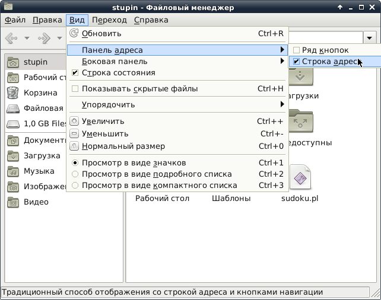
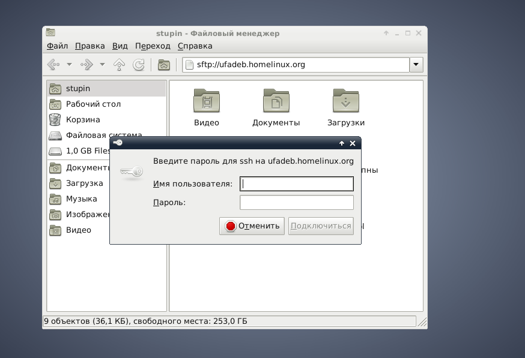
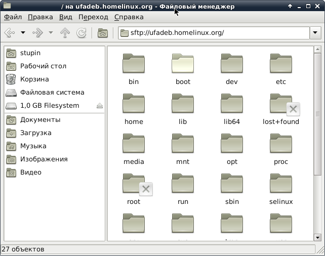
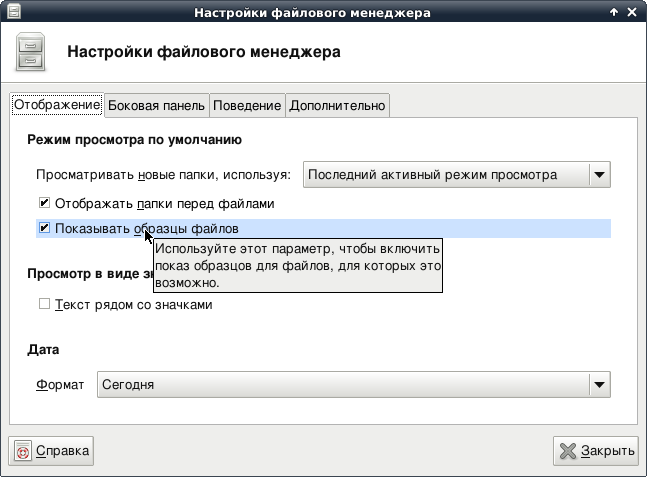
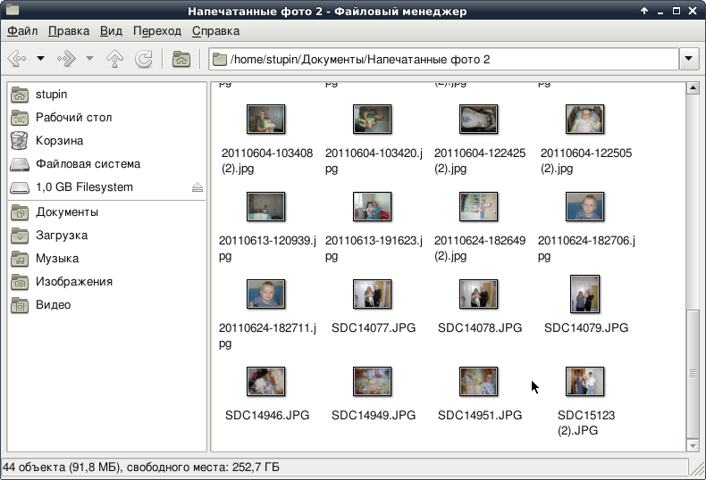

Ещё один тривиальный пост о том, как подключаться из Thunar по SFTP и о том, как заставить Thunar показывать миниатюры.
До недавних пор у меня не возникало желания подключаться по SFTP чем-либо, кроме консольного клиента sftp, но буквально только что такое желание возникло. Всё оказалось очень просто - нужно лишь поставить пакет gvfs-backends:
# apt-get install gvfs-backends
Теперь вводим в адресной строке Thunar URI нужного нам ресурса (sftp://ufadeb.homelinux.org):
В открывшемся окне вводим учётные данные пользователя удалённого компьютера:
И получаем доступ:
В адресной строке можно также указать имя пользователя (sftp://stupin@ufadeb.homelinux.org), в таком случае система предложит лишь ввести его пароль.
Заодно настроил построение миниатюр. Ранее этим заведовал пакет thunar-tumbnailers, однако в мире Linux постоянно всё течёт и меняется и теперь этим занимается пакет с названием tumbler. Нужно лишь поставить пакет:
# apt-get install tumbler
Затем, выставить в настройках Thunar галочку, предписывающую показывать миниатюры, если это возможно:
И Thunar начнёт показывать миниатюры картинок:
